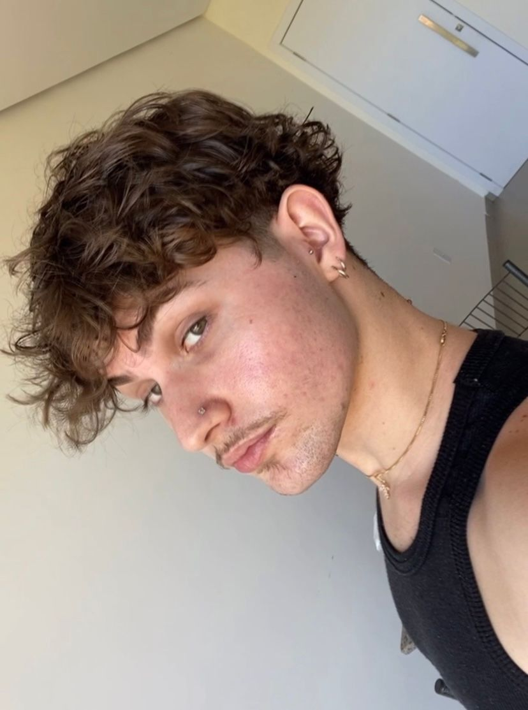
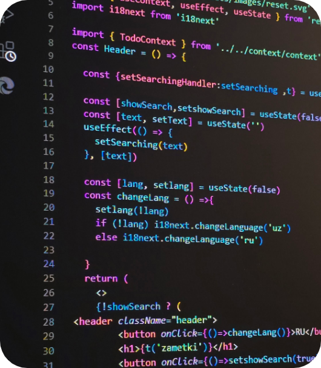
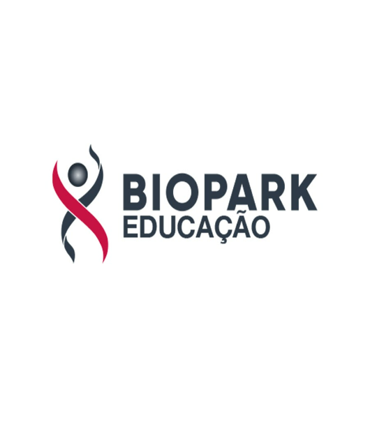

In addition to my technical expertise, I have acquired significant experience in various other fields, such as mechanical assembly and customer service as a waiter. These positions have not only strengthened my practical skills but have also refined key soft skills essential in any professional environment. Through my experience as an assembler, I developed a keen attention to detail, the ability to follow complex instructions, and a commitment to high-quality standards. Meanwhile, my role as a waiter helped me build strong interpersonal communication abilities, ensuring that I can engage with clients and colleagues alike in a clear, professional, and courteous manner. Both roles have contributed to my ability to solve problems under pressure, manage time effectively, and work collaboratively within a team. Additionally, I have learned to quickly adapt to new environments and embrace challenges, which has fostered a resilient and proactive attitude toward any task at hand. I am a motivated and driven individual, eager to apply the broad skill set I have cultivated through these diverse experiences. I am confident that these competencies, combined with my technical knowledge, will allow me to make a meaningful contribution to any organization I join.

As a student currently pursuing a degree in Software Engineering, I am actively learning various programming languages, including C, Java, JavaScript, CSS, HTML, and SQL. While I am still an amateur and do not yet have professional experience, my academic projects have provided me with a solid understanding of these languages. Among them, I have gained greater familiarity with Java, where I have focused on object-oriented programming, algorithm development, and data structures. My learning experience has allowed me to write clean, efficient code and understand key programming principles, even though I recognize there is much more to master. Despite being at an early stage in my career, I am highly motivated to continue building upon the foundational knowledge I have acquired. I approach every task with curiosity and a commitment to improving, with the ultimate goal of becoming proficient and capable of contributing effectively in real-world software development environments.
Biopark College, located in Toledo, Paraná, Brazil, is a distinguished institution committed to providing high-quality education in various fields, including technology, health, and business. The college is renowned for its innovative approach to learning, emphasizing practical experiences and real-world applications to prepare students for the dynamic job market. As a current student in the Software Engineering program at Biopark College, I am gaining a comprehensive understanding of software development principles, methodologies, and technologies. This program is designed to provide both theoretical foundations and hands-on practice, enabling students to develop essential skills in programming, software design, and project management. Through my studies, I benefit from a curriculum that includes exposure to various programming languages, frameworks, and tools, fostering a deep understanding of the software development lifecycle. The program encourages teamwork and collaboration through group projects, simulating real-world development environments. With a commitment to fostering innovation and critical thinking, Biopark College ensures that students like myself are well-prepared to meet the challenges of the rapidly evolving technology landscape. The Software Engineering program not only aims to produce proficient software engineers but also cultivates a mindset of continuous learning and adaptability, essential for success in the technology sector.
